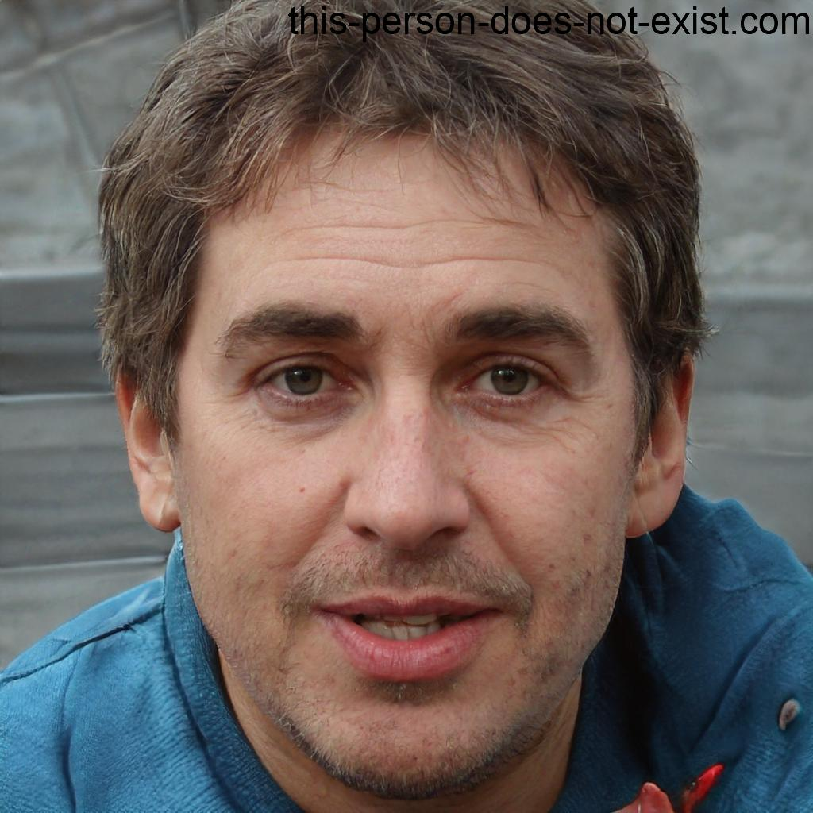

Nuestros ponentes
-

Ana Sostenible
Experta en gestión de residuos urbanos y políticas públicas de economía circular.
-
Dr. Verde
Investigador universitario especializado en biomateriales y reutilización de plásticos.
-

Lucía Circular
Emprendedora que transforma desperdicio textil en moda sostenible.
-

Ing. Reuso
Ingeniero industrial centrado en simbiosis empresarial y energías renovables.
-

Eduardo. Ambiente
Profesor de Economía Circular en la Universidad de Málaga.
-
Dra. Vera Reuti
Investigadora y experta en reciclaje y reutilización de materiales y su impacto en el ambiente.